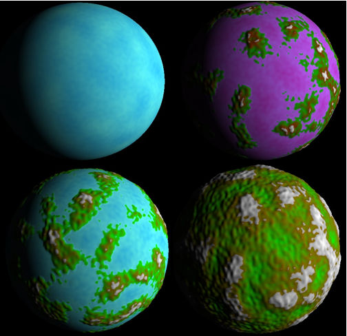

Why should you want a planet?
Let's imagine that you're working in your own project, or you need a starting point to build a new one, PlanetGenerator gives you an already built planet, which you can integrate in you're project.
This code could be integrated in your own game, simulator, learning project and even more.
This sofware is meant to be multi-platform, and it's already been tested in both Windows and Linux.
Tools
This software has been built using C++ and Ogre 3D 1.9. The code includes also a graphical user interface, made it with QT.